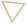
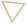
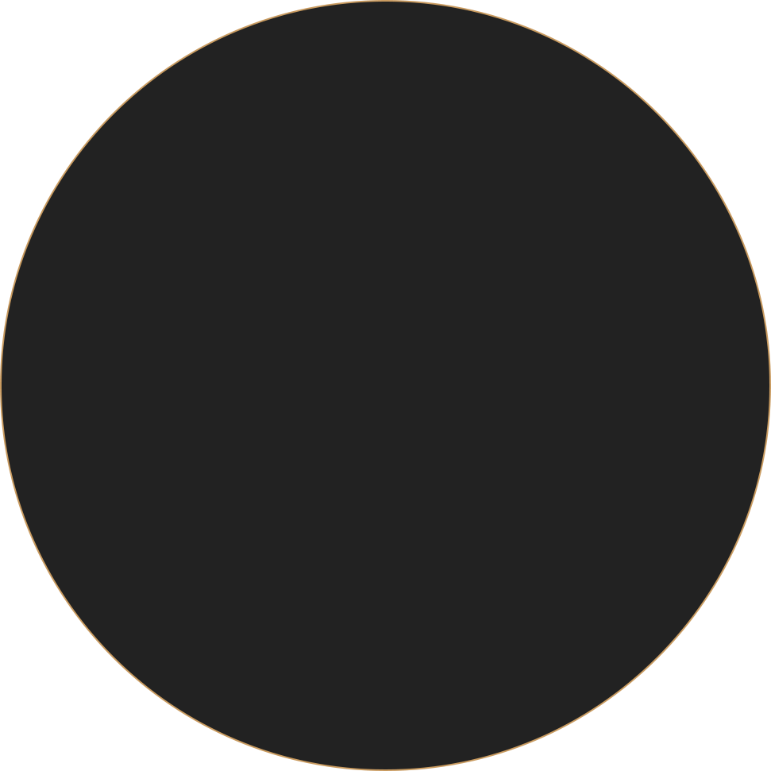
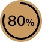
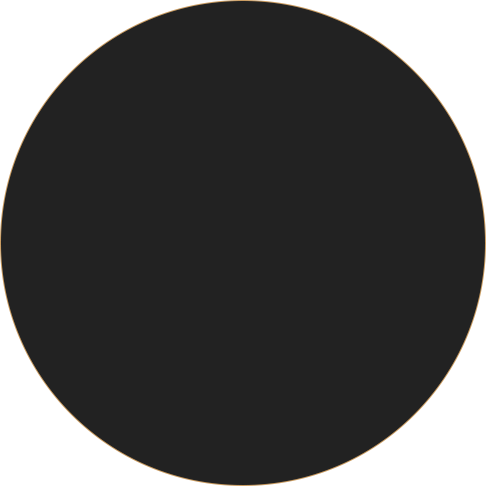
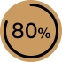

2018
姚东才
屠龙少年的另一项技能
个人
简历
2018
姚东才
屠龙少年的另一项技能
个人
简历
前端开发
 基本信息

BASIC INFORMATION
基本信息

BASIC INFORMATION
姓名： 姚东才
学位： 硕士
户籍： 安徽 合肥
爱好： 运动(骑车)、读书
求职：web前端开发
毕业学校：上海大学
185 5653 8705
 专业计能
PROFESSIONAL SKILL


JavaScript
Nodejs
Java
Ionic
Vue
AngularJS
SpringBoot
待续
小程序
专业计能
PROFESSIONAL SKILL


JavaScript
Nodejs
Java
Ionic
Vue
AngularJS
SpringBoot
待续
小程序
项目经验
PROJECT EXPERINCE
前后端分离项目，前端运用Vue，后端Nodejs框架Egg.js
项目介绍
2017
-
2018
内部OA管理APP工具，打造H5界面嵌入webview中,如同阿里钉钉
小程序电商平台，类似网易严选。后端选择nodejs Restful接口提供，数据库选用LeanCloud
自我评价
SELF-ASSESSMENT
我是一个比较内向而且朴实的小青年，我有扎实的专业知识基础，对专业知识有较深的了解；在学习方面我有超强的学习态度，在生活方面我有爱心、有素质。有较强的学习能力、我上进心强，处事态度细心谨慎、认真负责；尤其是在技术方面不会的我能够虚心请教他人，共同学习，共同进步！
请联系我
CONTACT ME
 Add a fiend
祝大家新年快乐!
Add a fiend
祝大家新年快乐!
Add a fiend
姓名：姚东才
手机：185 5653 8705
邮箱：1207542617@qq.com